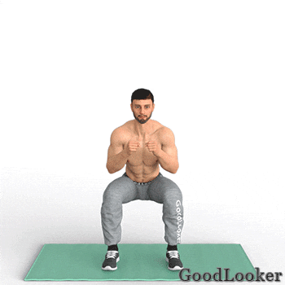
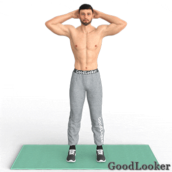
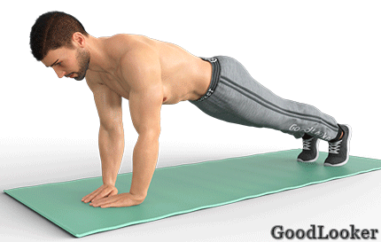
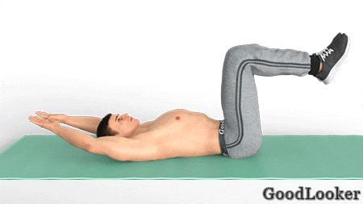
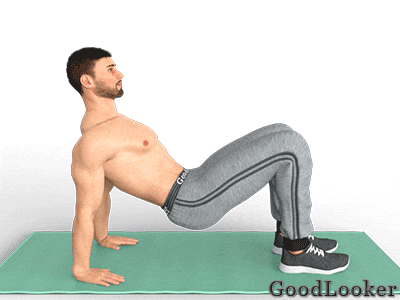
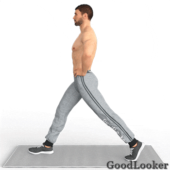
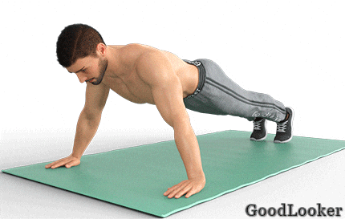
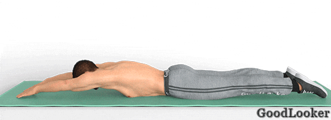
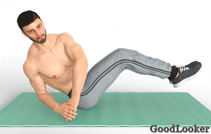
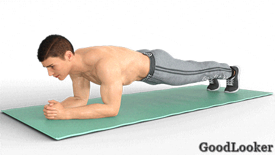

Второй день может показаться более сложным, так как здесь немало стато-динамических упражнений, которые особенно эффективны для пресса и мышц кора. Выполняйте упражнения в собственном ритме, концентрируясь на работе целевых мышц, чтобы увеличить эффективность тренировок.
Тренируйтесь подходами или по круговой системе на ваш выбор. В случае подходов повторите каждое упражнение по 2-3 подхода и только затем переходите к следующему упражнению. В случае круговой системы выполните все упражнения последовательно по одному подходу и затем повторите все упражнения в 2 или 3 круга. Тренироваться можно по таймеру или считая повторения.
Поставьте ноги немного шире плеч, руки согните в локтях, ладони сожмите в кулаки. Выполните классическое приседание до параллели бедер с полом, на подъеме повернитесь вправо и сделайте прямой удар левой рукой. Снова опуститесь в приседание и на следующем подъеме повернитесь влево и выполните удар правой рукой. Функциональные приседания включены в тренировку дома для мужчин с собственным весом, чтобы прокачать не только ваши ноги, но и сердечную мышцу, увеличивая выносливость организма.
Сколько выполнять: 14-16 приседаний всего.

Встаньте прямо, руки положите за голову, плечи не округляйте. Согните одну ногу в колене и поднимите колено вверх, опуская противоположный локоть ему навстречу. Поставьте ногу на место и поднимите другое колено, выполняя аналогичные действия. Старайтесь не опустить локоть как можно ниже, а повыше поднять колено. Вертикальное упражнение на пресс разогреет мышцы и суставы, приведет в тонус все тело, проработает мышцы живота и уберет жировую прослойку на поясе.
Сколько выполнять: 18-20 подъемов колена всего.

Встаньте в упор лежа, тело вытянуто в одну линию от макушки до пяток. Соедините ладони вместе, поставив их как можно ближе друг к другу. Следите, чтобы ладони находились под центром груди. Теперь выполните классическое отжимание, сгибая руки в локтях. В нижней точке плечи должны быть параллельны полу. Соблюдайте технику безопасности и отводите локти строго назад. Отжимания с узкой постановкой скульптурируют верхнюю часть рук, нагружая трицепсы и увеличивая их в объеме. Упражнение сложное, поэтому новички могут отжиматься от скамьи или от колен.
Сколько выполнять: 10-12 отжиманий.

Лягте на пол, согните ноги в коленях, руки вытяните за головой. Поднимите ноги, не разгибая их в коленях, чтобы голени были параллельны полу. Голову и лопатки поднимите вверх, одновременно разводя руки через стороны. В крайней точке касайтесь рукой внешней стороны голени или щиколоток. Во время скручиваний держите живот в напряжении, чтобы обеспечить максимальную нагрузку на пресс. Скручивания – это обязательный элемент программы тренировок для мужчин дома, так как укрепляют мышцы живота и кора, делая ваше тело сильнее.
Сколько выполнять: 12-15 повторений.

Сядьте на пол, согните ноги в коленях, обопритесь на руки позади себя. Поднимите таз на небольшое расстояние от пола. Вытяните одну руку вперед и поднимите навстречу ей противоположное колено, стараясь ладонью коснуться стопы. Вернитесь обратно и повторите для другой стороны. Упражнение из программы тренировок для мужчин с собственным весом задействует руки и плечи, нагружает спину и бедра, а также прорабатывает мышцы живота, делая ваш пресс крепче.
Сколько выполнять: 18-20 касаний ладонью стоп всего.

Поставьте руки на пояс и сделайте шаг вперед одной ногой. Согните ноги в коленях, опускаясь в выпад. Сгибайте ноги под прямым углом, чтобы минимально нагружать коленные суставы. Выполнив все повторения, поменяйте ногу. Базовое упражнение задействует несколько крупных мышечных групп, особенно нижней части тела, укрепляя бедра, икры и ягодицы, а также включает в работу прямую и косые мышцы пресса, приводя их в тонус.
Сколько выполнять: 12-15 повторений сначала на одну ногу, потом 12-15 повторений на другую.

Встаньте в упор лежа, ноги на ширине плеч, таз не провисает. Расставьте широко руки, сохраняя устойчивое положение. Согните руки в локтях, выполняя классическое отжимание от пола. В отжиманиях с широкой постановкой рук активно задействуются широчайшие мышцы спины и трапеции, что позволяет более глубоко проработать верх корпуса. Кроме того, вы качественно нагружаете грудные и укрепляете плечевой пояс.
Сколько выполнять: 10-12 отжиманий.

Лягте на живот, руки вытянуты перед собой, голова опущена вниз. На выдохе поднимите голову и верх корпуса, одновременно разводя руки в стороны и отводя их назад. В крайней точке движения сводите лопатки, активно прорабатывая мышцы спины. Выполняйте упражнение с полной амплитудой, чтобы хорошо прокачать верх корпуса. Проработать спину во время тренировка дома для мужчин без инвентаря не так просто, но упражнения типа «лодки» помогают это сделать лучше всего, так как обеспечивают стато-динамическую нагрузку на мышцы верха корпуса. Кроме того, это отличное упражнение для улучшения осанки.
Сколько выполнять: 12-15 повторений.

Сядьте на пол, ноги согните в коленях, руки держите по бокам корпуса. Поднимите ноги вверх, не разгибая их в коленях до параллели голеней с полом, спину немного отклоните назад. Руки сложите перед собой. Выполняйте поочередные скручивания корпуса вправо-влево, заводя руки максимально в каждую сторону, словно перекладываете что-то с места на место. Упражнение не только прорабатывает косые мышцы пресса, но и прокачивает весь кор за счет сложного статического положения. Если не получается держать ноги на весу, поставьте их на пол.
Сколько выполнять: 18-20 поворотов всего.

Встаньте в планку на предплечьях, для этого просто согните руки в локтях из упора лежа. Следите, чтобы таз не провисал и не поднимался вверх. Найдите устойчивое положение. Теперь согните одну ногу в колене и приведите ее к плечу с наружной стороны корпуса. Вернитесь обратно и повторите другой ногой. Еще одно упражнение из тренировки дома для мужчин с собственным весом, которое оказывает статическую и динамическую нагрузку, что позволяет не только проработать двигательные мышцы тела, но и задействовать глубокие постуральные мышцы кора.
Сколько выполнять: 18-20 подтягиваний колен всего.
